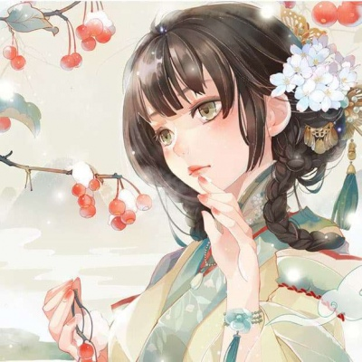

低维金属纳米材料可控合成
结构决定性能，合成决定结构。通过界面外延生长与表界面限域合成，在原子尺度上“雕刻”低维贵金属基材料，为活性位点的精准构筑提供新平台。

博士研究生
化学与材料科学学院 · 中国科学技术大学
科研如登山——目标清晰，路径自由。
Research
化学反应的极限，往往不是热力学，而是动力学——催化剂，正是打破这一极限的钥匙。研究以低维贵金属基纳米材料为核心， 追问一个根本性的科学问题：能否在原子尺度上精确设计催化活性位点，让能源小分子被高效活化，并沿着我们设定的路径精准转化？
我始终相信，催化性能并非偶然，而是由原子尺度的结构决定的。围绕这一信念，致力于建立从材料设计、结构表征到性能验证的完整研究路径： 以界面外延生长为手段，在异质界面上构筑晶格匹配的纳米结构；以表界面限域合成开辟新范式，将金属-非金属键合引入贵金属体系， 发展二维金属间化合物等新型低维材料平台；并结合原位与多尺度表征，在真实反应条件下追踪结构与电子态的演化，让机理与性能相互印证。
研究的意义，在于让分子尺度的洞察转化为真实世界的变革——更高效的能量转化、更清洁的化学过程、更可持续的未来。 我的目标，是让每一颗经过设计的活性位点，都能在真实器件中兑现其潜力。
结构决定性能，合成决定结构。通过界面外延生长与表界面限域合成，在原子尺度上“雕刻”低维贵金属基材料，为活性位点的精准构筑提供新平台。
看见，才能理解。综合 TEM/HRTEM、HAADF-STEM、XRD、XPS、XAFS 与同步辐射原位技术，在真实反应条件下追踪结构与电子态的演化，为催化机理提供原子级证据。
从活性位点到反应机理。聚焦氢气、氧气、二氧化碳等能源小分子的活化与选择性转化，打通材料设计到性能验证的完整链条，让原子尺度的设计兑现为宏观性能。
博士研究生 · 无机化学
中国科学技术大学（导师：吴长征）
硕士研究生 · 无机化学
中国科学技术大学（导师：吴长征）
本科 · 材料化学
中国科学技术大学
从材料化学出发，一路走向无机化学的前沿。
把每一个科学问题，写进经受同行评审的篇章。
Atomic-Layered Platinum-Based Intermetallic with Phosphorus Pillar Nanoengineering Enables pH-universal Hydrogen Oxidation Catalysis
DOI: 10.1002/anie.202515811Highly Crystalline Iridium-Nickel Nanocages with Sub-Nanopores for Acidic Bifunctional Water Splitting Electrolysis
DOI: 10.1021/jacs.4c01379Construction of Porous PtCo Alloy Nanotubes via an Epitaxial Growth Method for Efficient and Stable Electrochemical Oxygen Reduction Reaction
DOI: 10.1021/acs.nanolett.6c01157Interfacial Epitaxial Growth for the Synthesis of Noble/Non-Noble Metal Alloy Nanostructures toward High-Efficiency Hydrogen Oxidation Reaction
DOI：接收后补充Atomically Ordered Phosphorus Engineering Modulates Interfacial Water Structure for Highly Efficient Alkaline Hydrogen Oxidation
DOI：接收后补充介孔碳负载的层状铂基金属间化合物及其制备方法与用途
公开号：CN202510403544.0一种镍基贵金属多壳层纳米笼材料及其制备方法与应用
公开号：CN202511799487.9一种氢燃料电池与锂电池混合动力无人机
公开号：CN122276198A中国科学技术大学青年创新基金 · 项目成员 · 2027.1 – 2028.12
【项目职责与成果：负责催化剂合成、电化学测试与数据分析】
《高等无机化学》课程助教 · 2026
【工作内容：组织习题课、批改作业与答疑等，按实际情况补充】
在基金项目与三尺讲台之间，连接科研与传承。
每一份肯定，都是继续前行的注脚。
Album
正在加载相册…
Contact
欢迎交流与合作
ty12345@mail.ustc.edu.cn备用：3313952565@qq.com
查看论文与科研动态
researchgate.net/profile/Yi-Tan-87学术身份标识
orcid.org/0009-0000-6530-3270Site
今日访问 / 访客数据由 CounterAPI 免费计数服务提供。